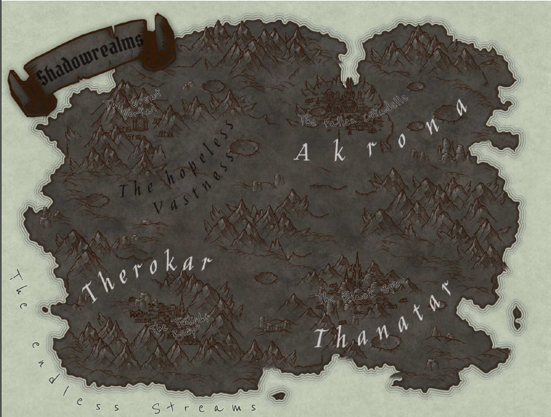

Created Samstag 08 August 2020

Zusammenfassung
- Zwischenebene, zwischen der Materiellen Plane und dem Arbitrarium, dem Strudel der Zeit und dem Seelenstrom
- Zeit vergeht dort schneller, etwa ein Jahr pro Tag auf der materiellen Ebene
- alten Herren wurden verbannt, betraten materielle Ebene, weiteres unbekannt
- dann kamen die Götter (nicht alle einverstanden, vor allem Noxa) zu Kuranesh und baten ihn die Herrschaft zu übernehmen
- der gab Teile an seine Kinder ab
- verschiedene Mächte der Schatten fließen hier zusammen, momentan Syvilla die einzige die dort, deshalb viel Einfluss, herrscht über alles, aber nicht komplett, weil sich verschiedene Gruppierungen widersetzen
- Akrona (Schatten der Erleuchtung) - früher beherrscht von Kuranesh
- Stammvater Asmodor, der Strahlende
- brachten das Licht, Stabilität der Dinge: ohne Licht kein Schatten
- erbauten die Zitadelle der Erleuchteten
- Therokar (Schatten des Zwiespalts) - beherrscht von Syvilla
- Stammvater Sintvall, der Leidende
- brachten die Leidenschaften, großen Gefühle, großes Leid: zwischen Licht und Schatten, Herrschaft über Zwielicht
- Thanatar (Schatten des Verderbens) - früher beherrscht von Apokai
- Stammvater Gundrabal, der Verdorbene
- verkörperten die dunkle Seite der Schatten
- Akrona (Schatten der Erleuchtung) - früher beherrscht von Kuranesh
- trostlose Einöde, furchterregenden Bestien und Gefahren jenseits aller Vorstellungskraft
- hier leben versklavten oder verirrten Seelen, fristen Dasein oder dienen
- Spiegelstellen sind Fenster in eine andere Ebene
- Art und Weise wie sich diese Spiegel öffnen scheint nicht zufällig
- man braucht große Macht um aus Spiegel Rift zu machen, bleiben oft nur Sekunden
Full Text
Nachdem Miriam das dunkle Rift betreten hatte, wurde sie in eine andere Plane gerissen: Die Schattenlande. Dort unterstellte sie sich den Dienst, ihrer neuen Gebieterin Syvilla Dhal Kuranesha, oder wie sie dort genannt wird: die Zwielichtkönigin, Herrin der Therokar. Die Plane ist eine Zwischenebene, zwischen der Materiellen Plane und dem Arbitrarium, dem Strudel der Zeit und dem Seelenstrom. Die verschiedenen Mächte der Schatten fließen hier zusammen: Die Akrona (Schatten der Erleuchtung), die Therokar (Schatten des Zwiespalts) und die Thanatar (Schatten des Verderbens), sind die verschiedenen Machtströme die aus den Schattenlanden ausgehen, und in den Einflussbereich anderer Ebenen züngeln. Die Verbannung der Herren der Akrona und der Thanatar, ermöglichte Syvilla die Machtübernahme der gesamten Ebene, obwohl die verschiedenen Mächte der Schatten nach wie vor in gegenseitigen Konflikt stehen, ist sie doch diejenige die als Herrin eine gewissene Balance erhalten konnte. Die Schattenlande sind jedoch trotzdem zu einer trostlosen Einöde geworden, durchzogen von schwarzen Gipfeln und Kratern, schauerlichen Stätten und Zitadellen, unter einem Himmel der ewigen Dunkelheit. Man selbst ist nur ein Schatten seiner selbst, und der Tod scheint in jedem Atemzug zu liegen. Die Augen derer, die in den Schatten verweilen sind verblasst und ihre Hoffnungen erloschen. Die Lande werden heimgesucht von furchterregenden Bestien und Gefahren jenseits aller Vorstellungskraft. Diejenigen armen, versklavten oder verirrten Seelen die hier hergefunden haben, fristen entweder ein Dasein im ewigen Kampf der Schatten, oder im Dienste ihrer dunklen Königin.
Was Miriam in Gesprächen mit der Zwielichtkönigin herausfinden konnte:
Syvilla, welche die Schattendomäne ihrers Bruders Apokai auf der Thanatar verabscheut versucht dessen wachsenden Einfluss hintanzuhalten. Seine Macht wächst allerdings in großen Schritten, und es wird immer schwieriger seine ungeheuerlichen Diener zurückzudrängen. Wilde schattenhafte Bestien, Schattenunholde, Grimghales und größere, gefährlichere Unwesen, strömen immer wieder durch sogenannte Rifts, um ihren dunklen Herren auf der materiellen Ebene zu dienen. Auch die Rückkehr ihres Vaters Kuranesh auf den Thron der Akrona, wäre eine Katastrophe für Syvilla. Sie allein will über die Schattenlande herrschen, die drei Mächte der Schatten unter ihrer Kontrolle zusammenführen als dass sie am Tag der Götterdämmerung, einen Rang unter den Göttern selbst einnehmen kann, einen Rang an der Seite ihrer Patronin Noxa. Sie scheint besessen von der Prophezeiung der Morgenröte, oder der Götterdämmerung wie sie sie nennt. Die Rückkehr der Götter, die Verschmelzung der Ebenen und die Geburt einer neuen Ära. Die Macht über die gesamte Ebene, könnte ihr dabei helfen, die Elemente der Götter, die Scherben zusammenzutragen, und sie alleine hätte die Macht darüber zu entscheiden, wann der jüngste Tag kommt. Apokais Auferstehung, sowie seine Besessenheit gegenüber der Eridar Gaphne, sowie seine Suche nach den Scherben, stellt eine erhebliche Gefahr für ihre Pläne dar, genauso die Rückkehr ihres Vaters. Um ihre Macht zu festigen, ist sie wohl zu jedem Schritt bereit. Sie sagt die Morgenröte ist unvermeidlich, und es ist an der Zeit sich der richtigen Seite anzuschließen.
Welche Informationen Miriam in der Bibliothek der gefallenen Zitadelle finden konnte:
Man sagt das königliche Blut ausgehend von Kuranesh, und damit seine Blutlinie sind besonders den Kräften der Schatten zugetan. Die Geschichten besagen, dass die Götter selbst an Kuranesh herangetreten sind, und ihm die Aufgabe zugetragen haben über die Schattenlande zu herrschen, in einer ebenso erfolgreichen Art und Weise wie er über sein irdisches Reich herrschte. Man sagt, die Götter selbst hätten ihn zum Halbgott der Schatten erhoben, auf dass er Erleuchtung bringe, in das dunkle Tal der Verzweiflung. Nicht alle Götter waren von diesem Unterfangen angetan, schon gar nicht die Eridar Noxa, welche selbst nach dem Reich der Schatten trachtete. Die direkten Nachfahren von Kuranesh, erbten die Mächte der Schatten, so gelang es Apokai, vor seiner Verbannung, Kuranesh zu verraten und seine irdische Form zu ermorden. So gelang es auch Syvilla, nach dem Tod ihrer irdischen Form, die freigewordene Machtposition der Schattenlande an sich zu reißen. Nun allerdings scheint sie blind, in ihrem Glauben selbst in den Gottesrang aufzusteigen, blind zu denken sie können sich das Königreich der Schatten sichern, am Tag der Götterdämmerung.
Die Ersten drei Geschlechter. Bereits vor der Herrschaft Kuranesh über die Schattenlande, in seinem Sitz in der Zitadelle der Erleuchtenden, gab es die ersten drei Blutlinien, welche bereits zur Zeit der Elder selbst, mit der Teilung der Schattenlande betraut wurden. Diese Familien sind auch jene, nachdenen heute die drei Ströme der Schatten bezeichnet werden, denn sie waren es die die Ströme trennen konnten, um die fragwürdigen Mächte der Schatten zu beherrschen: Die Akrona, die Therokar und die Thanatar.
Die Akrona mit ihrem Stammvater Asmodor, der Strahlende, zum Rang eines Halbgottes erkoren, herrschte über die nordöstlichen Weiten der Ebene. Man sagt sie brachten das Licht in das dunkle Reich, sie brachten eine Stabilität der Dinge, denn ohne das Licht, der Schatten nicht existieren kann, und ohne Schatten kein Licht. Sie erbauten die Zitadelle der Erleuchteten.
Die Therokar, mit ihrem Stammvater Sintvall, der Leidende, ebenfalls zum Halbgott erkoren, herrschte über die westlichen Lande südlich der großen Weiten. Seine Familie, brachte die Leidenschaften auf die Ebene, die großen Gefühle, aber auch das Große Leid. Sie standen zwischen dem Licht und den Schatten, und man schrieb ihnen die Herrschaft über das Zwielicht zu.
Die Thanatar, mit ihrem Stammvater Gundrabal, der Verdorbene, ebenfalls zum Halbgott erkoren, herrschten über den Süden des Landes, und verschanzten sich in den schwarzen Spitzen um ihre dunklen Diener zu erschaffen. Sie verkörperten die dunkle Seite der Schatten, welchen nur durch das Licht Einhalt geboten werden konnte.
Nachdem ein Krieg die drei Ströme der Schatten an den Rande der Zerstörung trieb, und zur gleichen Zeit der Krieg der Elder die materielle Ebene zu zerstören drohte, teilten sich die Elder und die alten Blutlinien der Schatten wurden aus ihren Diensten enthoben. Sie betraten die materiellen Ebenen, und ihr weiterer Verbleib bleibt unklar.
Was Miriam über ihre Vergangenheit herausfinden konnte:
Miriam schaffte es sich mehrmals in den weißen Brunnen zu schleichen, ein besonderer Ort der Zwielichtfeste. Dort konnte sie, wenn sie das silberne Wasser berührte, mehrmals Visonen ihrer Vergangenheit erlangen (Die Visonen waren meist verzerrt, und nicht hundertprozentig klar): Syvilla schaffte es mehrmals in der Vergangenheit, sich in die Machenschaften des Kultes der schwarzen Sonne einzuschleichen, um den Fortschritt des alten Rituals zu verfolgen. Sie, deren Einfluss auf die Materielle Ebene sehr schwach ist, versuchte seit jeher diejenigen irdischen Kräfte auszuforschen, die eine Verbindung zu den Schatten aufweisen. Gerade für Apokais Auferstehung war es von großer Bedeutung mächtiges Blut zu zapfen um den ewigen Prozess seiner Auferstehung zu beschleunigen, umso besser wenn es Blutlinien der Abkömmlinge der ersten Herrschaftsgeschlechtern der Schattenlande selbst sind. Kaum ein besserer Ort für Syvilla um ihre Dienerschaft zu erweitern. So kam es in jener Nacht, als das kleine Halblingskind, frisch geboren, in den Armen der sterbenden Mutter gebettet, nach dem verzweifelten Vater auf den schwarzen Altar geführt wurde. Nachdem das Blut des Vaters vergossen wurde, und die Menge sich an der Macht labte, die in seinem Blut vorhanden war, wurde auch das Kind auf den kalten Stein gelegt. Es war Syvilla, welche an den Rande ihrer Kapazitäten vordrang, um den Säugling vor seinem sicheren Ende zu bewahren. Es war Syvilla welche in genau jenem Säugling einen Nachkommen der ersten Blutlinien erkannte. So sorgte Syvilla dafür, dass das Kind in einem sicheren Umfeld aufwachsen konnte, als sie den Säugling in jener verregneten Nacht, in die Arme des ahnungslosen Alchemisten legte. Es war nur eine Frage der Zeit, bis das Kind seine Mächte entdeckt, und dann wird die Zeit kommen, wo auch Syvilla an das Kind herantreten wird, um eine alte Schuld einzufordern. Was Miriam über die Ebene, ihre Ein- und Ausgänge und Portale feststellen konnte: Die Schattenlande scheinen eine eigenartige Verbindung zu den anderen Ebenen zu haben. Immer wieder öffnen sich Rifts an sogenannten Spiegeln, oder Spiegelstellen. Spiegelstellen sind Orte an denen sich zuerst nur ein Fenster in eine andere Ebene öffnet. Die Art und Weise wie sich diese Spiegel öffnen scheint nicht zufällig. Außerdem ist eine große Macht erforderlich, um einen Spiegel zu durchbrechen, also ein begehbares Rift zu erschaffen. Diese Rifts bleiben daher oft nur Sekunden bestehen. Das große Portal im Nordwesten der hoffnungslosen Weiten, einem schrecklichen Ort, ist nicht mehr aktiv. Es diente wohl einst als offizielle Verbindung zwischen Adalantis und den Schattenlanden, ein Portal der Götter. Miriam konnte außerdem herausfinden, dass die Zeit auf dieser Plane viel scheller vergeht als draußen. Ein Jahr in den Schattenlanden, gleicht einem Tag auf Exordia. Die Bewohner der Ebene sind meist ausdruckslose Diener, jeder Art die dem Willen ihrer Königin gehorchen. Außerhalb auf den Ebenen gibt es Gruppierung die sich verschiedenen Seiten zuordnen. Manche Gruppierungen agieren um die gefallene Zitadelle, und versuchen die Rückkehr ihres rechtmäßigen Königs zu sichern, manche Gruppen agieren um die Schwarzspitze, die fanatisch die Rückkehr ihres dunklen Herren ersehnen. Obwohl die Akrona und die Thanatar momentan herrscherlos sind, ist es Syvilla immer noch nicht voll und ganz gelungen die gesamten Territorien zu kontrollieren, ihr Einfluss ist allerdings groß und ihre Machtstellung zentral.
Miriams Zeit im Dienste der Königin und die Beherrschung der Schatten
Miriam diente als rechte Hand von Syvilla in der riesigen und schauerlichen Zwielichtfeste. Ein riesiger Komplex aus schwarzem Stein, Wällen, Türmen und Ruinen, welcher sich hoch erhebt über einer zerfallenen Stadt, die viele Tausende Diener der Schatten beherbergt. Syvilla unterrichtete Miriam in den dunklen Künsten der Schattenweberei, um eine starke Verbündete an ihrer Seite zu haben. Doch je mehr und näher sie mit Syvilla zusammenarbeitete, desto mehr wurde Miriam bewusst, welche zweifelhafte Ziele die Zwielichtskönigin verfolgte. Ihr Wahn, und ihre Besessenheit über die Morgenröte, könnte zu ihrem Untergang führen, und damit auch zum Untergang von Miriam. Die Verschmelzung der Ebenen des Arbitrariums, der Schattenlande, des Seelenstroms und der Materiellen Ebene wäre nichts weiter als der Untergang der bekannten Welt. Syvilla denkt in ihrem Wahn, sich als Göttin etablieren zu können. Alles was Miriam jemals kannte würde vernichtet, die Zeitrechnung auf Null gesetzt und die Götter würden abermals wandeln auf einer neuen Pangäa der Ebenen. Zumindest ist das, wovor die alten Bücher warnen. Die alten Bücher beschreiben, dass nur im Falle einer ausgeglichenen, geordneten Rückkehr, einer Balance der verschiedenen Mächte der Eridari, ein wirkliches „Paradies“ geschaffen werden könnte und dies wäre nur möglich wenn die alle sieben göttlichen Elemente zusammengeführt würden. Aber ist es nicht gut so, dass die Götter verbannt sind? Will man dieses Paradies überhaupt? Diese ganze Vorstellung der Götterdämmerung, oder der Morgenröte, ist das überhaupt etwas, dass man sich wünschen will für Exordia? Ist es nicht gut so, wie es ist? Ist es nicht sogar etwas, dass man mit allen Mitteln verhindern sollte, wenn man bei klarem Verstand ist? All diese Fragen, schwirrten Miriam durch den Kopf als sie ihre Zeit im Dienste Syvillas verbrachte, und Tag für Tag wurde ihr klarer vor Augen geführt, dass Syvilla wohl um keinen Deut besser ist, als ihr Bruder Apokai. Der eine handelt zwar aus boshafter Rache, während die andere nur nach Macht trachtet. Sie sind verfeindet, jedoch trotzdem beide bereit, die Morgenröte einzuleiten, und dass nur um sich selbst zum Vorteile zu verhelfen. Egal wer obsiegen mag im Machtgerangel, die Auswirkungen für die Welt wären verheerend. Vielleicht wäre die Rückkehr des strahlenden Königs Kuranesh, das einzige das wieder Stabilität in diese Ebene bringen könnte, so wie es die Eridari einst vorsahen. Doch wer weiß schon von den Plänen der Götter? Klar ist nur eines, wenn nicht gehandelt wird, dann wird das eine oder andere Ergebnis zum Untergang führen, und nur solange die Götterscherben im Verborgenen liegen, bleiben die Götter an das Arbitrarium, die Schatten an die Schattenlande, und die Toten an den großen Strom gebunden. . Sollte nur eine Scherbe in die falschen Hände geraten, könnte ihre Macht dazu missbraucht werden, um nur eine, oder wenige bestimmte Gottheiten zurück auf die materielle Ebene zu führen. Die Folge eines solchen Mißverhältnisses in der Balance der Mächte hätte eine Ära der Tyrannei, oder Schlimmeres zur Folge. Miriam erkannte bald, dass wenn sie sich weiterhin in die Dienste der Syvilla begab, sie ihre Besessenheit und womöglich den Untergang der Welt unterstützen würde. Miriam, welche sich mittlerweile nach fast einem ganzen Jahr in den Schattenlanden, zu einer fähigen Schattenweberin entwickelt hat, entschied sich gegen ihre Herrin zu stellen. Sie versuchte einen Ausweg aus ihrer Domäne zu finden, um die Welt, und vor allem ihre Freunde, vor der bevorstehenden Katastrophe zu warnen. Allerdings unterschätzte Miriam, die Fähigkeiten ihrer Herrin, und Miriams Pläne wurden erkannt. Voller Zorn und wutentbrannt über den Verrat ihrer „Schwester“, wie Syvilla sie nannte, lies sie sie in die tiefsten und schauerlichsten Höhlen, die dunklen Verliese unterhalb der Zwielichtfeste sperren, auf dass sie auf ewig dort verwelke, um am Tag der Morgenröte mitanzusehen, welch großen Fehler sie begangen hatte.
Miriams Flucht und ein neuer Freund:
Gerade als Miriam in den dunklen Verliesen kurz vor ihrer völligen Verzweiflung stand, besuchte sie etwas in ihrer Höhle. Ein schattenhafter Wolf, von ähnlicher Gestalt wie die Schattenunholde, welche die hoffnungslosen Weiten unsicher machten, aber doch anders. Die Schatten, die sich wie dunkle Flammen von Rücken und Schweif der Bestie züngelten, mündeten in einem helleren, silbrigen Ton. Genauso seine Augen, die Miriam durch die Dunkelheit anstarrten, wie Kometen in der Nacht, furchterregend und doch sanft. Ein tiefes Knurren und eine dämonisch flüsternde Stimme schnitt sich durch die Dunkelheit, als der Schatten zu sprechen begann: „Tochter der Akronas… Es ist nicht Recht, dass ihr hier in der Dunkelheit verweilt. Ihr die ihr eigentlich Licht in die Dunkelheit bringen sollt.“ Miriam stotterte und fragte zögernd nach dem Namen der Bestie. „Ich bin [ NAME ERFINDEN], aus dem Dienste der alten Herren der Zitadelle. Ich war auf der Suche nach euch, nachdem eure Anwesenheit in den Schattenlanden vernommen wurde. Ihr seid nicht alleine.“ „Die Welt steht vor dem Abgrund Kind. Ihr könnt uns vor diesem Schicksal bewahren. Eure Freunde, ich habe sie durch die Spiegel gesehen. Sie befinden sich in großer Gefahr, denn der Prinz der schwarzen Spitzen, ist auferstanden und er schickt seine Diener um sie zu finden. Sein Griff nähert sich. Wir haben keine Zeit. Ich fûhre euch aus der Dunkelheit, wenn ihr mir vertraut.“ Miriam, welche das Angebot akzeptierte, nachdem sie erfahren hatte, dass ihre Freunde noch am Leben sind, und ihre Hilfe brauchen, streckte ihre Hand nach dem Geschöpf, und sie formten eine dunkle Wolke aus Schatten, und Licht und bahnten sich ihren Weg aus den tiefen Stollen der Zwielichtfeste. [DETAILS DER FLUCHT SELBST ÜBERLEGEN] Miriam und [NAME], welche es geschafft haben, aus der schauerlichen Festung zu entkommen, schlugen sich gemeinsam wochenlang durch die ewigen Weiten [DETAILS DER REISE ÜBERLEGEN], bis sie endlich an den Schwarzspitzen ankamen, dort wo das Böse sich versammelt hat. Sie näherten sich unbemerkt und beobachteten die Diener der schwarzen Schatten, in einer Grube am Fuße der messerartigen Gipfel, unter einem schwarz-violett leuchtenden, blitzenden Himmel. „Seht ihr, sie planen einen weiteren Angriff.“ [NAME] macht auf eine Gruppe von Schattenunholden aufmerksam, welche widerlich knurrend vor einem Spiegel warten. Miriam stockt der Atem, als sie in den Spiegel blickt und ihre Freunde erkennt, in finsteren Katakomben aus dunklem Stein. „Sie befinden sich an der letzten Ruhestätte derer vom Blute Kuranesh. Ein gefährlicher Ort, denn der Blick des Prinzen richtet sich dorthin. Seine Macht dort ist real, und allgegenwärtig, sein Fluch bindet diese Mauern. Ohne euch, werden sie versagen, und wenn sie versagen, gibt es keine Hoffnung mehr.“ Miriam und [NAME] beobachten den Spiegel, als plötzlich einer der schwarz-violett leuchenden Blitze auf den Spiegel niedergeht, und das verschwomme Bild, sich plötzlich aufreißt. [NAME] rammt seine Klauen in den schwarzen Sand, und macht sich bereit vorzupreschen. Die knurrenden, widerwärtigen Schattenunholde vor ihnen stürmen schreiend und jaulend durch den Riss, wie wildgewordene Hunde, die von der Leine gelassen wurden. [NAME] blickt zu Miriam. „JETZT“